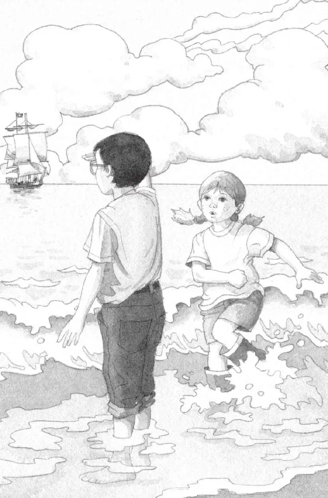

杰克感到热辣辣的阳光洒进了树屋。
他闻到了咸腥的海水气味。
他听见了海浪的声音。
他和安妮朝窗外看去。
树屋停在一棵棕榈树上，远处是一片波光粼粼的蓝色大海，海面上行驶着一艘大船。此情此景，跟书上的那幅图片完全一样。
“来不及啦！”波利又叫起来。
“快看！”安妮说。
波利在树屋上空一圈圈地盘旋，接着朝大海俯冲下去。
“快走，我们跟上它！到海里去！”安妮说着把雨衣脱下来，扔在地板上。
“等等，我们得先仔细地看看书。”杰克说。
他刚要伸手去拿那本书，却被安妮抢先夺了过去。
“你可以拿到沙滩上再看嘛。”安妮说。她直接把书塞进了杰克的背包，连封面都没有看一眼。
杰克叹了口气。说实在的，大海看上去确实美丽、诱人。

“好吧。”杰克说着也脱掉了雨衣。
“快点儿！”安妮把背包递给杰克，顺着梯子爬了下去。
杰克把雨衣叠好，放在那一摞书的旁边。然后他背上背包，爬下绳梯。
安妮刚落到沙滩上，就朝海边跑去。杰克看到她蹚进了水里，脚上还穿着雨靴呢。
“你的靴子，安妮。”杰克喊道。
安妮耸了耸肩，说：“没事，到时候会干的。”
杰克把背包放在地上，然后脱掉靴子和袜子，把它们放在了一起。然后，他卷起牛仔裤的裤腿，跑过滚烫的沙滩，踏进了海浪。
海水温暖而清澈，杰克能看见水下的贝壳和小鱼儿。
他用手挡住刺眼的阳光，眺望辽阔的海面。
那艘大船似乎近了一点儿。
“波利在哪儿？”安妮问。
杰克环顾了一下四周，没有波利的踪影。
它不在棕榈树上，不在被阳光照耀的沙滩上，也不在波光粼粼的蓝色大海上。
杰克再次眺望大海，那艘船似乎更近了，杰克甚至能看清船上的旗子。
杰克盯着那面旗子看，心头突然涌起一股寒意。
旗子是黑色的，上面有一个骷髅头和两根交叉的腿骨。
“哦，天哪！”他轻声叫着，随即往岸上跑去。
“出什么事了？”安妮一边问，一边跟着杰克，哗哗地蹚着水往回跑。
杰克跑到他的背包前，安妮跟了过来。
杰克从背包里掏出那本书，两个人第一次认真地看了一下书名。
“哎呀！”安妮不禁惊叫起来。
“《加勒比海盗》。”杰克大声地读出书名。